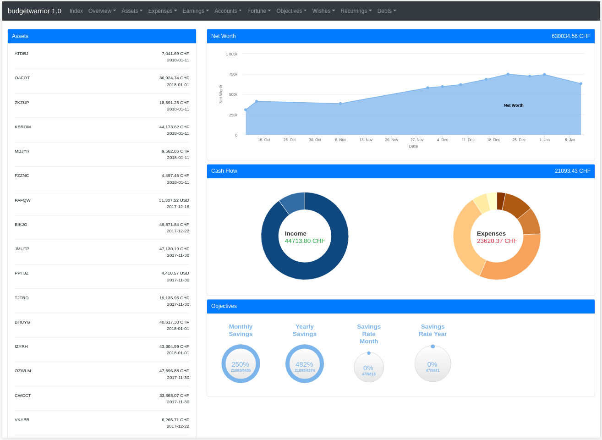

budgetwarrior 1.0: Web interface and asset tracking!
I'm happy to announce the release of budgetwarrior 1.0. This is a major change over the previous version.
Web Interface
Until now, budgetwarrior could only be used in command line. This is fine for me, but not for every body. Since I wanted to share my budget with my girlfriend, I needed something less nerdy ;)
Therefore, I added support for a web interface for budgetwarrior. Every feature of the console application is now available in the web version. Moreover, since the web version offers slightly better graphical capabilities, I added a few more graphs and somewhat more information at some places. I'm not nearly an expert in web interface, but I think I managed to get something not too bad together. There are still some things to improve that I'll go through in the future but so far the web interface is pretty satisfying and it is mobile friendly!
The web server is coded in C++ (who would have guessed...) and is embedded in the application, you need to use the command server to use it:
budget server
and the server will be launched (by default at localhost:8080). You can
configure the port with server_port=X in the configuration file and the
listen address with server_listen=X. You can access your server at
http://localhost:8080.
Here is what this will display:
Note: All the data is randomized
The main page shows your assets, the current net worth, your monthly cash-flow and the state of your objectives.
The menu will give you access to all the features of the application. You can add expenses and earnings, see reports, manage your assets and your objectives and so on. Basically, you can do everything you did in the application, but you have access to more visualization tools than you would on the console. For instance, you can access your fortune over time:

or see how your portfolio does in terms of currency:

Normally, unless I forgot something (in which case, I'll fix it), everything should be doable from the web interface. This is simply easier people that are not as nerdy as me for console ;)
The management is still the same, the server will write to the same file the base application uses. Therefore, you cannot use the server and the command line application on the same machine at the same time. Nevertheless, if the server is not running, you can still use the command line application. This could be useful if you want to use the web visualization while still using the command line tool for managing the budget.
The default user and password is admin:1234, but you of course change it using
web_password and web_user in the configuration. You can also disable the
security if you are sure of yourself by setting server_secure=true in
the configuration. The server currently does not support
Currently, it does not protect against concurrent modifications of the same data. It is very unlikely to happen with only a few people using the applications, but I plan to improve that in the future.
Server mode
Although it's not possible to use both the server and the command line application at the same time, it's possible to use the command line application in server mode. In this case, instead of reading and writing the data from the hard disk, the application will send requests to the server to read and write the data it needs. With this, you can use both the server and the command line application at the same time!
While running, the server exposes a simple API that can be used to get all the information about the budget data and that can also be used to add new expenses, earnings and so on directly to the server data. The API is also protected by authentication.
Currently, the server does not support HTTPS. However, you can run it behind
a proxy such as nginx which is running in HTTPS. This is what I'm doing. The
server mode supports SSL from the client to the server, you just have to set
server_sll=true in the configuration.
This is the mode I'm currently using and will continue using. With this, I can quickly do some modifications using the command line and if I want to see advanced visualization, I just have to open my browser and everything is updated. Moreover, in the future, other people involved with my budget will be able to access the web interface. This also solves the synchronization problem in a much better way than before.
Just as it was the case with the server, this is not made to be used in parallel by different users. This should be perfectly fine for a small household.
Assets Tracking
Already a few months ago, I've added the feature to track assets <https://baptiste-wicht.com/posts/2017/10/budgetwarrior-track-assets-portfolio-savings-rates-auto-completion.html> `_ into budgetwarrior. You can define the list of the assets you possess. The tool will then help you track the value of your assets. You can set your desired distribution of bonds, cash and stocks and the tool will help you see if you need to rebalance your assets. This will let you compute your net worth, with :code:`budget asset value:

Moreover, you can also set a few of your assets as your portfolio assets. These
assets have a desired distribution and are handled different. These are the
assets you directly manage yourself, your investment portfolio. You can then
track their value and see if they need rebalancing. For instance, here is
a randomized rebalancing of your portfolio, with budget asset rebalance:

All these features are now also available on the web version as well.
Better console usability
A few months ago, I added some quality-of-life improvements to the console appplication. You can now cycle through the list of possible values for accounts for instance in the console! This is down with the UP and DOWN keys. Now, I also added auto-completion with TAB key. You can write Ins<TAB> and it will complete to Insurances if you have an Insurances account in your budget. This makes it much faster to enter new expenses or to update asset values.
Installation
If you are on Gentoo, you can install it using layman:
layman -a wichtounet emerge -a budgetwarrior
If you are on Arch Linux, you can use this AUR repository <https://github.com/StreakyCobra/aur> (wait a few day for the new version to be updated)_
For other systems, you'll have to install from sources:
git clone --recursive git://github.com/wichtounet/budgetwarrior.git cd budgetwarrior git checkout 1.0 make sudo make install
Conclusion
Overall, even though I'm not a fan of web development, it was quite fun to add all these features to budgetwarrior and made it much better I think. This is a very significant change to the project since it almost doubled in number of source lines of code, but I think it's a change that was needed.
I think these changes really make budgetwarrior more useful to a wider group of people and I'm pretty to have finally come around and implemented them. I still have a few things I plan to improve in the near future. First, I want to make the website a bit faster, there are many scripts and stylesheets that are being loaded and make the site a bit bloated. I'll also enable gzip compression of the website to speed up things. I will also ensure that the server can handle requests concurrently without any problem of the data (should be simple since we don't need high performance). I may also add a new module to budgetwarrior to track your progress towards retirement if this is something you are interested in, but I haven't decided in what form exactly. Finally, I will also try to optimize the requests that are being done between the server and the client when run in server mode. Indeed, it currently downloads almost all the data from the server which is far from optimal.
If you are interested by the sources, you can download them on Github: budgetwarrior.
If you have a suggestion or you found a bug, please post an issue on Github.
If you have any comment, don't hesitate to contact me, either by letting a comment on this post or by email.
Comments
Comments powered by Disqus